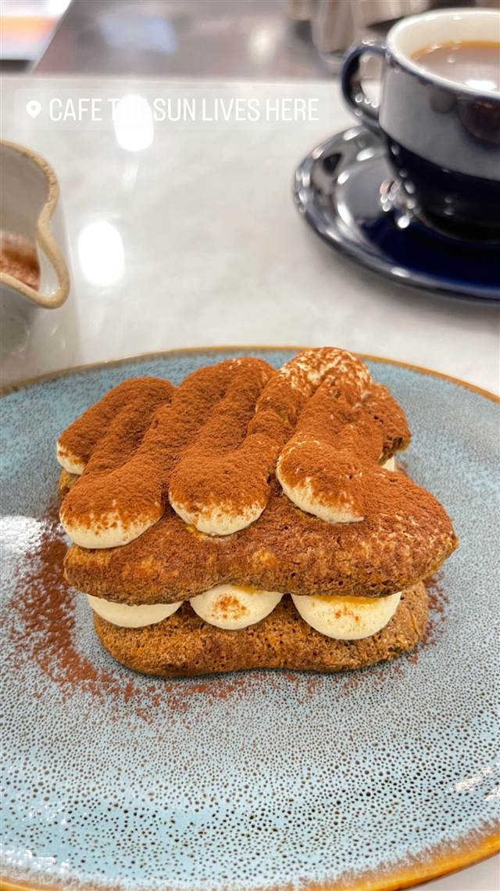
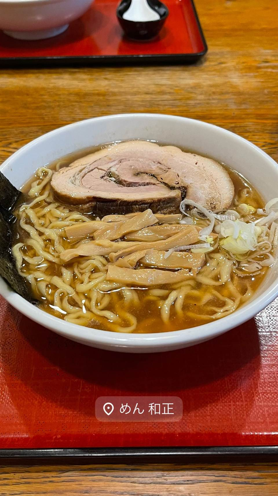
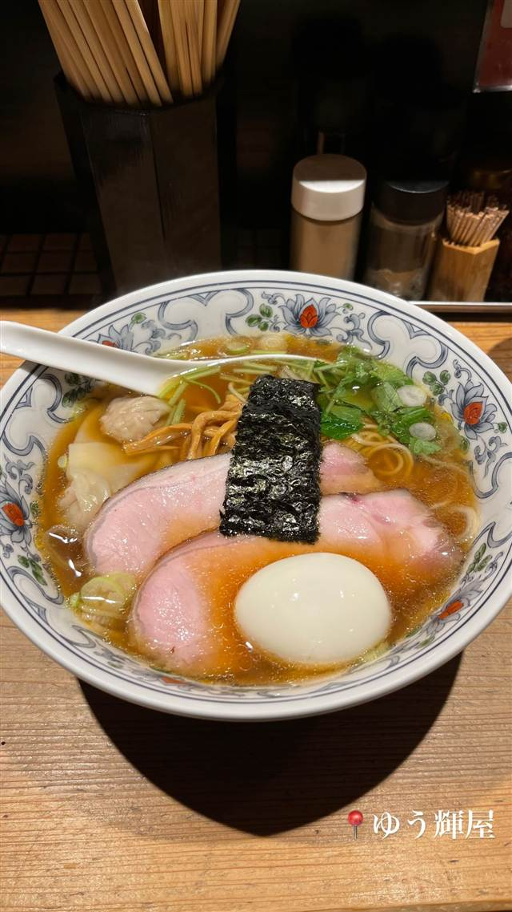
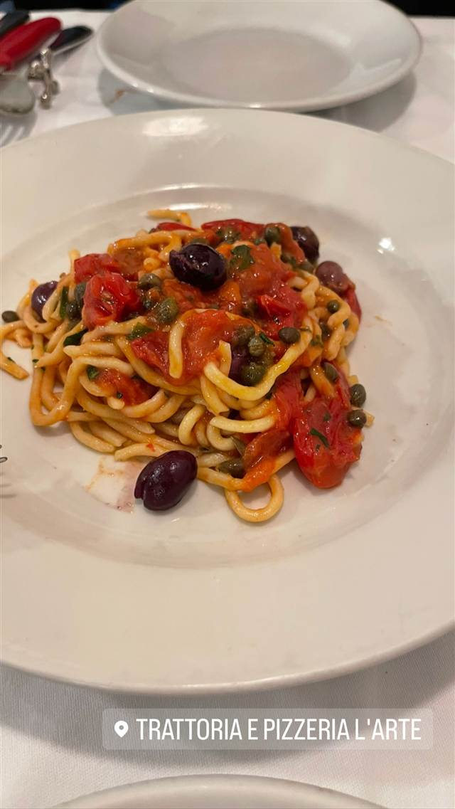
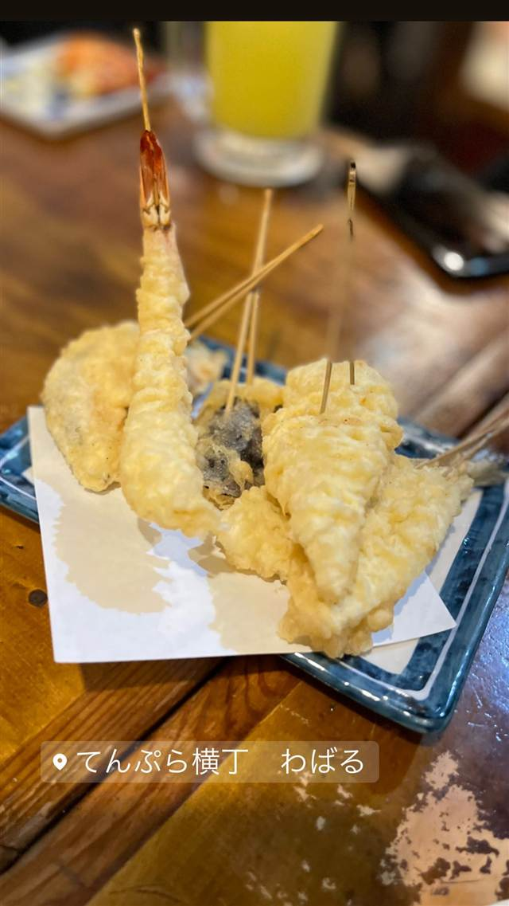
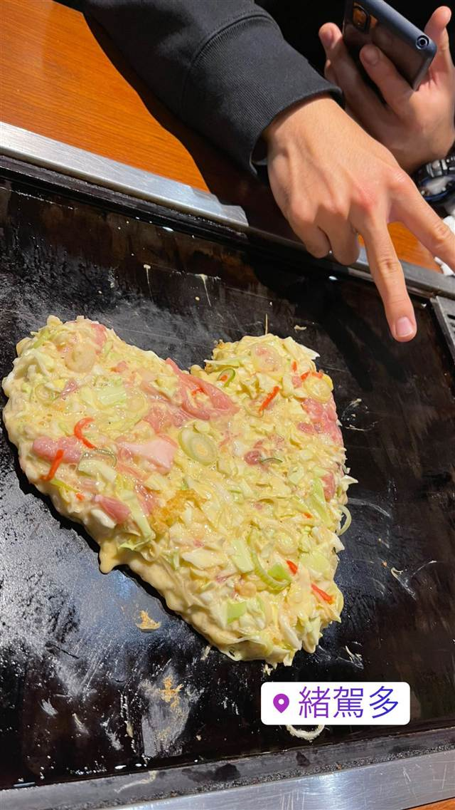

cafe The SUN LIVES HERE
牛乳瓶入り3層チーズケーキ「CHILK」は世田谷区公式土産に認定
CAFE THE SUN LIVES HERE
2012年、三軒茶屋の週末限定カフェとして始まった店。牛乳瓶入りの3層チーズケーキ「CHILK」と“飲めるティラミス”が看板で、世田谷区の公式土産にも選ばれている。
TRIVIA
豆知識
- 「CHILK」は年間約20万個を出荷する人気商品。
- 元は週末だけ開く小さなカフェとしてスタートした。
REVIEWS
世間の評判
3.29食べログ
瓶詰めチーズケーキと席の少なさ
- 瓶詰めチーズケーキCHILKのなめらかで濃厚な味わいを評価する声が多い
- 駅直結で買い物ついでに立ち寄りやすい立地を評価する声が複数ある
- 席数が15席と少なく落ち着かないと感じる人もいるという指摘がある
- 価格に見合うかどうかは意見が分かれているという声が複数見られる
食べログ 口コミ75件
| 創業 | 2012年、三軒茶屋の週末限定の小さなカフェとして創業 |
|---|---|
| 看板 | 3層仕立てのチーズケーキ「CHILK（チルク）」と“飲めるティラミス” |
| こだわり | 牛乳瓶に詰めた3層チーズケーキ「CHILK」はプレーン・いちご・ほうじ茶・抹茶などの味展開。ムース状に仕上げた“飲めるティラミス”も看板商品。 |
| 掲載・評価 | 2022年 世田谷区地域No.1グランプリ受賞、世田谷区の公式土産品に認定。 |
| どこから | 23区の外れ・近郊 |
| 営業時間 | 月〜日 10:00-21:00 |
| 予算 | 昼 ～¥999 夜 ～¥999 |
| 定休日 | 無休 |
| 場所 | 三軒茶屋 東京都世田谷区三軒茶屋 |
| メモ | 三軒茶屋駅から徒歩7分。満席になりやすく予約推奨。 |
食べたもの：ティラミス風ケーキ / チーズケーキとプリン
NEARBY
近い店・同じ系統の店
-

★ 醤油・中華そば 三軒茶屋駅 めん和正（わしょう） 看板のない行列店、永福町大勝軒系の煮干し中華そば 昼 ～¥999 夜 ～¥999 -

★ 醤油・中華そば 三軒茶屋 らーめん・わんたん ゆう輝屋 たんたん亭に連なる系譜の透き通った醤油ワンタン麺 昼 ¥1,000～¥1,999 夜 ¥1,000～¥1,999 -

パスタ 三軒茶屋駅 トラットリア ピッツェリア ラルテ（Trattoria e Pizzeria L'ARTE） ビブグルマン掲載、ピザ百名店4度選出のVPN認定ナポリピッツァ 昼 ¥3,000～¥3,999 夜 ¥8,000～¥9,999 -

天ぷら・天丼 三軒茶屋 てんぷら横丁 わばる 三軒茶屋店 薄衣でサクサクの江戸前串天ぷらを塩やソースで味変 昼 ～¥999 夜 ¥2,000～¥2,999 -

お好み焼き・もんじゃ 三軒茶屋 緒駕多（おがた） 自由が丘で5年修行した店主の、京都仕込みの出汁とソース 昼 ¥1,000～¥1,999 夜 ¥2,000～¥2,999 -
 カフェ 中目黒
カフェ ファソン 中目黒本店（CAFÉ FAÇON）
コーヒーとの相性を考え抜いたバスクチーズケーキ
昼 ¥1,000～¥1,999 夜 ¥1,000～¥1,999
カフェ 中目黒
カフェ ファソン 中目黒本店（CAFÉ FAÇON）
コーヒーとの相性を考え抜いたバスクチーズケーキ
昼 ¥1,000～¥1,999 夜 ¥1,000～¥1,999
ONSEN & SAUNA